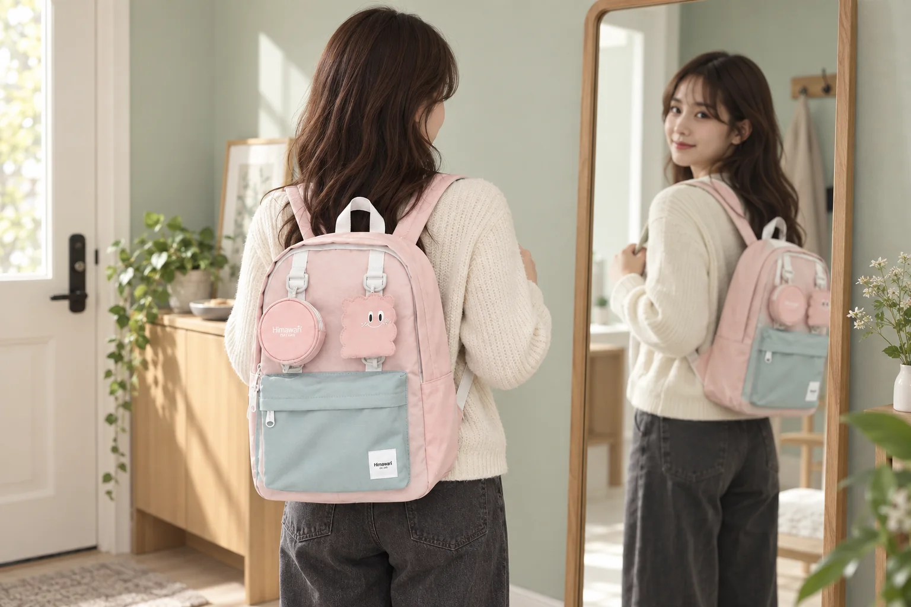

체구에 맞는 백팩 고르는 법: 등판 길이·폭·수납량 확인하기

체구에 어울리는 백팩은 단순히 ‘작은 사이즈’를 뜻하지 않습니다. 같은 키라도 어깨 너비와 등판 길이, 평소 들고 다니는 짐은 서로 다릅니다. 제품의 숫자만 보기보다 실제로 짐을 채웠을 때의 길이와 폭, 어깨끈의 조절 범위를 함께 비교하면 몸에 자연스럽게 어울리는 비율을 찾기 쉽습니다.
1. 지금 잘 쓰는 가방부터 재어보세요
새 가방의 치수를 보기 전에 현재 편하게 쓰는 가방의 가로·세로·폭을 재어 기준을 만듭니다. 너무 크거나 작다고 느꼈던 부분도 기록하세요. 예를 들어 길이는 괜찮지만 옆으로 넓어 보였다면 새 제품에서는 가로 폭과 옆면 깊이를 함께 줄여 비교할 수 있습니다.
전체 선택 순서가 필요하다면 좋은 백팩을 고르는 기본 기준을 먼저 살펴보세요.
2. 등판 길이는 거울에서 확인하세요
상품에 표시된 세로 길이와 비슷한 크기의 종이나 얇은 상자를 등에 대고 거울로 봅니다. 가방 윗부분이 목 뒤로 지나치게 올라오지 않는지, 아래쪽이 움직임을 방해할 만큼 길어 보이지 않는지 확인하세요. 숫자가 비슷해도 윗부분의 곡선과 바닥 형태에 따라 보이는 비율은 달라질 수 있습니다.
3. 폭은 짐을 넣은 상태로 판단하세요
빈 백팩은 납작해 보이지만 물병과 파우치, 책을 넣으면 앞뒤 깊이가 커집니다. 체구가 작은 편이라면 정면의 가로 길이뿐 아니라 옆에서 보이는 폭도 확인하세요. 수납칸이 많아도 사용하지 않는 공간까지 채우면 가방이 몸보다 크게 느껴질 수 있습니다.
내 짐에 필요한 공간을 나누는 법은 백팩 수납 구조 고르기에서 이어집니다.
4. ‘평소 짐’으로 수납량을 시험하세요
노트북이나 태블릿, A4 파일, 물병처럼 매일 넣는 물건을 목록으로 만든 뒤 제품 내부 치수와 비교합니다. 가방을 작게 보이게 하려고 필요한 짐을 억지로 눌러 담으면 지퍼가 팽팽해지고 물건을 꺼내기 어려워집니다. 반대로 자주 비는 큰 공간은 내용물이 움직이게 하므로 필요한 만큼의 여유를 남기는 것이 좋습니다.
5. 어깨끈을 양쪽부터 맞추세요
평소와 비슷한 짐을 넣고 양쪽 어깨끈 길이를 조금씩 같은 정도로 조절합니다. 가방이 한쪽으로 기울지 않는지, 걸을 때 몸에서 크게 떨어져 흔들리지 않는지 살펴보세요. 두꺼운 겨울 외투를 입을 때도 조절 여유가 남는지 확인하면 계절 변화에 대응하기 편합니다.
착용 후 세부 조정은 백팩 어깨끈 조절 5단계를 참고하세요.
6. 온라인 구매 전 사진을 두 방향으로 보세요
정면 착용 사진만 보지 말고 옆면, 뒷면과 내부 사진을 함께 확인합니다. 모델의 키만으로 크기를 단정하기보다 제품 실측값과 자신이 잰 기준 가방을 비교하세요. 색상 옵션마다 소재나 구성품이 같은지도 상세 정보를 통해 다시 확인하는 것이 좋습니다.
마지막 1분 체크리스트
- 현재 편하게 쓰는 가방의 가로·세로·폭을 재었나요?
- 평소 반드시 넣는 물건이 무리 없이 들어가나요?
- 짐을 채운 뒤 옆면이 지나치게 불룩하지 않나요?
- 양쪽 어깨끈을 맞췄을 때 조절 여유가 남나요?
- 정면뿐 아니라 옆면과 뒷면 비율도 확인했나요?
작아 보이는 가방보다 내 짐과 몸 사이에서 균형이 잡히는 가방이 일상에서 더 편리합니다. Himawari 제품은 전체 백팩 목록에서 치수와 색상 옵션을 비교해 보세요.
참고·안내
- Himawari 백팩 제품 목록과 실측 정보
- 치수와 착용감은 체형, 옷차림과 짐의 양에 따라 달라질 수 있으므로 실제 사용 조건으로 비교하세요.
- 대표 이미지는 Himawari No.0422 제품 사진을 참조해 만든 연출 이미지입니다.
자주 묻는 질문
키가 작으면 무조건 작은 백팩을 골라야 하나요?
키만으로 결정하기보다 등판 길이와 어깨 너비, 평소 짐의 양을 함께 확인하세요. 필요한 물건이 무리 없이 들어가면서 가득 채웠을 때 몸보다 지나치게 넓거나 길지 않은지 보는 편이 좋습니다.
온라인에서는 백팩 크기를 어떻게 비교하나요?
상품의 가로·세로·폭 치수를 확인하고 비슷한 크기의 상자나 종이를 몸 뒤에 대어 거울로 비율을 살펴보세요. 실제 착용 이미지와 모델 정보는 참고하되 자신의 자주 입는 겉옷과 평소 짐을 기준으로 판단합니다.
빈 가방만 메어봐도 착용감을 알 수 있나요?
빈 가방과 짐을 넣은 가방의 부피와 균형은 다릅니다. 가능하다면 평소 들고 다니는 노트, 물병, 파우치와 비슷한 무게를 넣고 어깨끈을 맞춘 뒤 걸어보세요.